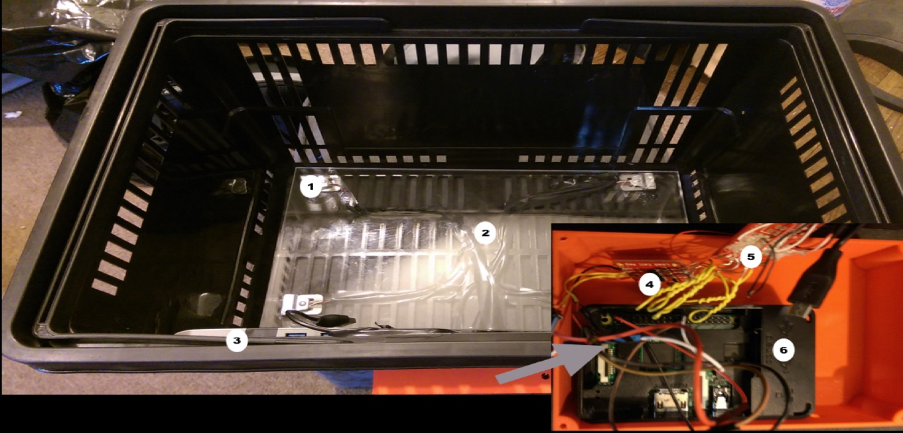
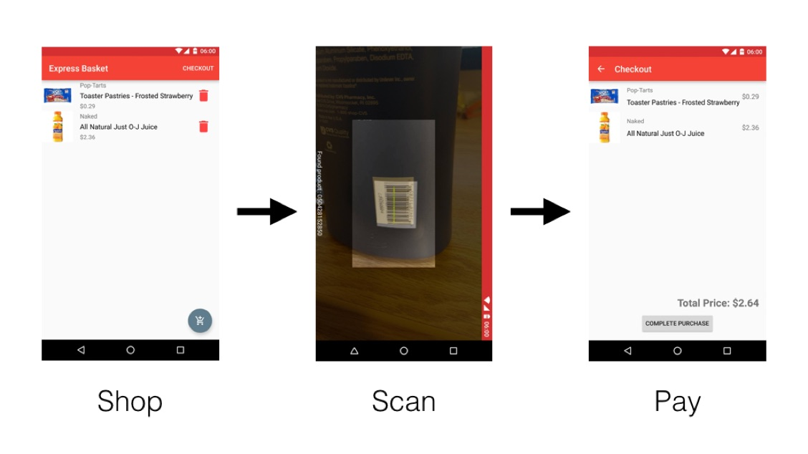

System Description
Hardware Components

-
Load Sensor
The load sensor will be able to detect a range of weights. It will communicate its observed weights to the microcontroller.
-
Scale
A piece of acrylic is secured over the load sensors to distribute the weight evenly
-
Power
The Smart Basket will be powered by an onboard battery that is charged using the USB Type-C fast charging specifications. We will also charge the user’s phone on the same battery.
-
Hx711 Amplifier
A small breakout board for the HX711 IC that reads the changes in the resistance of the load cell in order to calibrate and get accurate weight measurements
-
Load Sensor Combinator
Bare PCB that combines four load sensors into a standard 4-wire wheatstone configuration
-
Microcontroller
The microcontroller will be used to orchestrate the usage of all of the sensors and communication with transmitters. It will read and write data from the load sensor, and bluetooth transceiver.
Mobile Application

Barcode Scanner
The application will feature a barcode scanner so the system can easily identify the product and obtain its correct weight. This requires the mobile device in question to have a camera.
Virtual Cart
The mobile application will also maintain a list of items that have been checked into the cart known as the virtual cart. It will list items as well as the current total of the cart. Users will be able to remove items from their virtual cart, by interacting with the app.
Online Checkout
We will be integrating online payment to ease the user’s checkout experience. By leveraging the built-in security of the device, we aim to have an extremely secure point of sale.
Basket Integration
The application will communicate with the basket via bluetooth. When the app scans a barcode, it will record the item’s expected weight, then let the user and the basket that the product should be weighed. Upon weighing the product the microcontroller will read from the weight sensor and report the weight via the bluetooth transceiver back to the phone. The phone will then verify the actual weight by comparing it to the expected weight of the product. If the product is of the correct weight, the product is added to the virtual cart.